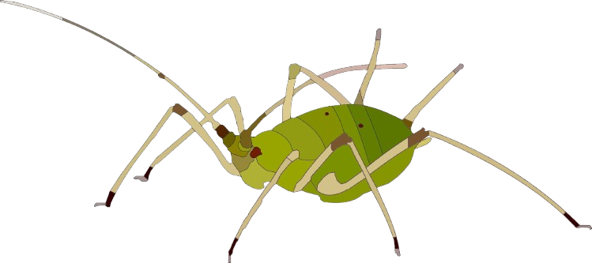
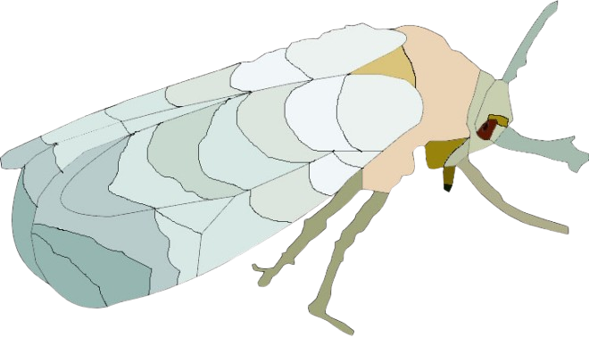

Сисні комахи
Сисні комахи — це група комах, які живляться соками рослин або кров'ю тварин, завдаючи шкоди сільському господарству та природним екосистемам. До них належать, зокрема, попелиці, комарі та трипси. Вони можуть висмоктувати соки з рослин, викликаючи їх відмирання, а також слугувати переносниками захворювань, що впливають на здоров'я людей і тварин. Знищення цих комах є важливим аспектом агрономічної практики для захисту врожаю.
Тля
Опис: Тля — дрібна сисна комаха, що живиться соками рослин, завдаючи значної шкоди сільському господарству.
Поширення в Україні: Поширена по всій території України, особливо в зонах з теплим кліматом.
Білокрилка
Опис: Білокрилка — сисна комаха, яка найчастіше зустрічається в теплицях. Вона швидко розмножується і виснажує рослини.
Поширення в Україні: Широко розповсюджена в південних регіонах та в теплицях по всій Україні.
Павутинний кліщ

Опис: Павутинний кліщ — маленький шкідник, який харчується клітинним соком рослин, залишаючи на них павутину.
Поширення в Україні: Зустрічається на всій території України, особливо у теплицях та на кімнатних рослинах.